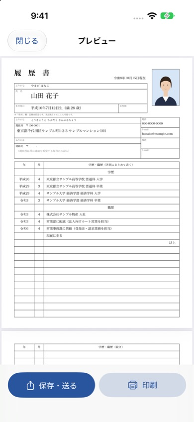
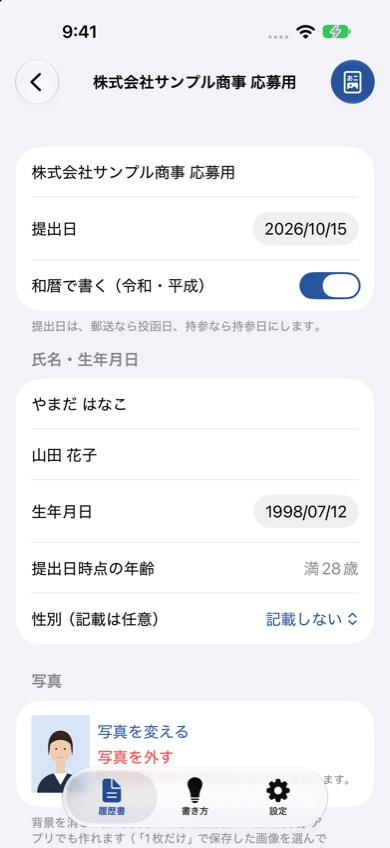

履歴書
iPhoneで入力するだけで、厚生労働省の様式例に沿ったA4の履歴書PDFを作れるアプリです。メールで送ったり、コンビニやプリンターで印刷したりできます。入力した内容はiPhoneの中だけに保存します。
履歴書の作成は、アプリ「証明写真・履歴書・職務経歴書」の「履歴書」タブで使えます（バージョン1.1以降）。
iPhone（iOS 17以降）・無料で試せます（透かしなしの出力は買い切り300円）


できること
- 様式どおりのPDF：厚生労働省の履歴書様式例をもとにしたA4・2ページ。性別欄は記載任意です。
- 学歴の年を自動入力：生年月日と最終学歴から、高校入学から卒業までの年月を入れます（早生まれにも対応）。
- 和暦・西暦の切り替え：提出日・生年月日・学歴の年がまとめて切り替わります。満年齢も自動で計算します。
- 志望動機の例文：アルバイト・新卒・転職などの例文から書き始められます。
- 写真を貼る：縦40×横30mmの写真欄に合わせて配置します。証明写真アプリで作った写真もそのまま使えます。
- 応募先ごとに複製：志望動機だけ変えた履歴書を何通でも作れます。
- 送る・印刷する：PDFをメールやファイルに保存、AirPrintで印刷、コンビニのネットプリントにも。
よくある質問
どの様式の履歴書が作れますか
厚生労働省が公表している履歴書の様式例をもとにした、A4・2ページの履歴書です。性別欄は記載を任意にしています。応募先から様式の指定がある場合は、その指示に従ってください。
コンビニで印刷できますか
作ったPDFをコンビニ各社のネットプリントに登録し、A4で印刷できます。AirPrint対応のプリンターなら、アプリから直接印刷することもできます。
無料で使えますか
入力とプレビューは無料です。無料のままでは出力したPDFに「見本」の透かしが入ります。買い切り（300円）で、何通でも透かしなしで出力できます。機種変更後は「設定」の「購入を復元」を押してください。
便利な早見表
入学・卒業年 早見表：生年月日から、履歴書に書く学歴の年を西暦・和暦で計算
お問い合わせ
メール: tanacount.support@gmail.com
返信までお時間をいただく場合があります。
ほかのアプリ
職務経歴書：職種別の例文から書き始めて、見やすいA4のPDFに
証明写真：背景を消して規格サイズに。L判に並べてコンビニで印刷
棚卸カウンター：JANバーコードを読み取って、小さなお店の在庫を数えるiPhoneアプリ